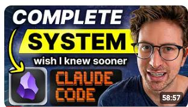

把笔记变成「可执行的第二大脑」

这张图来自 Greg Isenberg 最近的视频（讲完整系统与 Claude Code 工作流）。
核心点：有了 CLI，笔记不只是“存档”，而是能被 Agent 调用的长期上下文系统。
当 Obsidian 里积累了足够多、并且彼此有链接的笔记后，Agent 不再只是通用问答工具，而是能基于你的长期上下文做协作。
Obsidian 现在有 CLI，Agent 可以直接读写和检索你的笔记库。
这不是小更新，而是“人类知识库 × Agent 执行力”的接口升级。
你可以让 Agent：
也就是说： Obsidian 负责长期记忆与结构化连接； Agent 负责检索、归纳、推理与执行； 你负责方向、判断与最终决策。
当笔记库成熟后，一句话就能触发“检索 → 归纳 → 优先级 → 执行建议”的完整链路。
Obsidian CLI 不是小功能，而是协作接口升级。
当笔记库足够丰富时，Obsidian CLI + Agent 会把“记录知识”升级为“调度知识”。
你不只是在记笔记，而是在训练一个真正懂你上下文的协作系统。